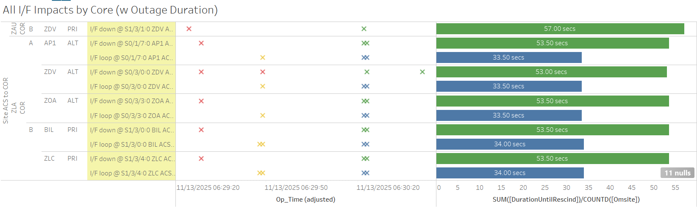
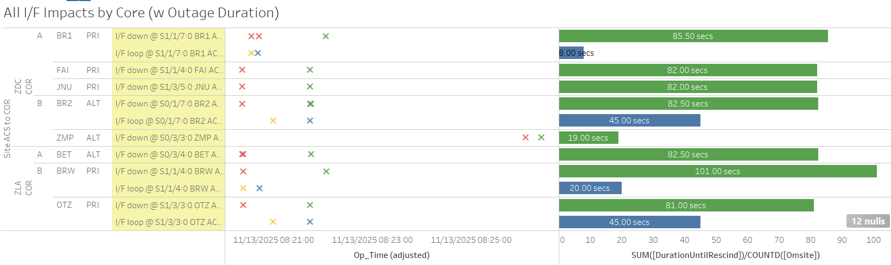
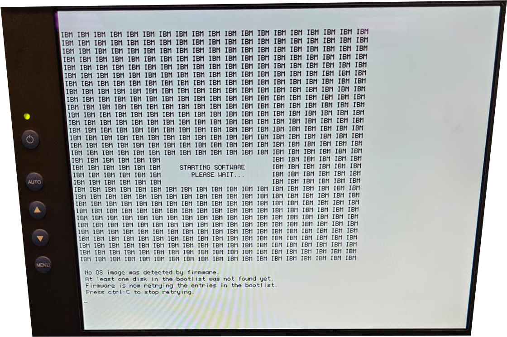

Weekly Highlights 20251112-20251119
11/12 - ZBW WRE-B Flapping Subframe Reasonability
- 11/6 01:48 - ZBW WRE-B started flapping SE 728 Subframe Reasonability for all C&Vs...
- 11/7 02:50 - ZBW WRE-B to Maintenance and Control Powered to address SE 728s; restored to Normal at 11/7 03:38
- 11/7 04:40 - ZBW WRE-B SE 728 Subframe Reasonability for ZTL Only...
- 11/7 09:12 - ZBW WRE-B SE 728 Subframe Reasonability for all C&Vs...
- 11/7 15:33 - ZBW WRE-B to Maintenance until Engineering can discuss issue...
- 11/10 14:41 - ZBW WRE-B to Verification to monitor phase noise...
- 11/12 17:39 - ZBW WRE-B restored to Normal Mode after monitoring phase noise for 24 hours
- 11/17 17:02 - ZBW WRE-B started alarming with recurring SE 728 Subframe Reasonability for all C&Vs and PID WRS Down; last SEs occurred at 11/18 01:15
- 11/18 07:58 - ZBW WRE-B Faulted with SE 53 Rcvr External Ref Fault; coincided with high phase noise on all bands; Reset but could not initialize -- ref LIR 1220771932; Control Powered multiple times and finally restored to Normal at 11/18 12:36
11/17-11/18 Subframe Reasonability events and Faults coincide with elevated Phase Noise for WRE-B on all bands.

SLES REQ order RF Power Divider. On order --
ref LIR
1222374632
11/12 - G4 Geomagnetic Storm
- 11/12 02:18 - All C&Vs alarmed with SE 757
IGPs with High GIVEI (IGP) -- G4
(Severe) Storm Levels Reached;
SEs rescinded at 11/12 03:05
- 11/12 02:37 - MMD alarmed with SE 728 Subframe Reasonability and PID WRS Down for ZLA C&V only
- 11/12 03:01 - SE 728 Subframe Reasonability for MMX WRE-A and WRE-B + PID WRS Down for all C&Vs
- 11/12 04:39 - All C&Vs alarmed with SE 757 IGPs with High GIVEI (IGP); SEs rescinded at 11/12 05:25
11/12 - MRs Affecting Multiple Sites
- 11/12 08:02 - ZLA-ZTL Ring 1 ALT / Ring 2 PRI
comms down hard + some other WRS and GUS comms
for
MR-213234 - L3 to support FW9500 transition...- 11/12 08:14 - Additional ZLA-WRS comms down hard...
- 11/12 08:18 - All lines cleared (~924 seconds)
- 11/12 08:28 - Alaska + Brewster site comms down
hard --
MR-217224 - GCI to reconfigure a network device at SADC; all lines cleared at 11/12 10:05 (~5788 seconds)

11/13 - SZ1 GUS M&C Maintenance
- 11/13 18:08 - SZ1 GUS to Maintenance to
Perform CCR009 upgrade to replace M&C equipment-- ref LIR 217103821; Control Powered, TLT Verified, and restored to Backup at 11/13 20:42
11/14 - ZSE WRE-A Freq Std Alarms
- 11/14 20:48 - ZSE WRE-A started flapping SE 30 Minor Alarm for Freq Std -- ref LIR 1218540532...
- 11/16 11:36 - ZSE WRE-A to Maintenance Mode and Control Powered to address flapping SE 30 Minor Alarm; restored to Normal at 11/16 14:14 but SE 30 Minor Alarm continued flapping 11/16 14:13...
- 11/17 18:34 - ZSE WRE-A to Maintenance Mode and Control Powered to address flapping SE 30 Minor Alarm; Freq Std Inits failed after Control Powers; Control Powered OFF at 11/17 21:34 until Freq Std can be replaced...
11/16 - ZBW PCU-C Failed
- 11/16 11:12 - ZBW WRE-C PCU Failed;
STATED THEY CYCLED POWER AND NO OUPUTS CAME BACK ONLINE FOR THIS UNIT, THEY ALSO STATED A BURNT SMELL COMING FROM THE BACK OF THE UNIT, THEY ARE IN THE PROCESS OF ORDERING A NEW ONE-- ref LIR 220866321...
11/17 - YFB WRS Subframe Reasonability
- 11/17 15:31 - YFB WRS (all WREs) alarmed with SE 728 Subframe Reasonability for all C&Vs and PID WRS Down
11/19 - SZ1 GUS Intrusive PMs
- 11/19 16:51 - SZ1 GUS to Maintenance for
intrusive PMs... L-Band antenna replacement-- ref LIR 216409721...
11/19 - ZTL GPS Clock Lost Timelock
- 11/19 19:46 - ZTL GPS Clock alarmed with SE 202 GPS Clock Not Time Locked; SE rescinded at 11/19 19:56 (~600 seconds)
L1/L2 Bias Errors
- 11/12 02:42 - HNL WRS L1/L2 Bias Error
No other L1/L2 Bias Errors!
Various Comm Impacts
* Only captures major / long-term comm outages
Canada Comms:
- 11/12 03:46 - YYR Ring 1 comms cleared (~2.7 million seconds; down since 10/16)
- 11/12 04:08 - YYR Ring 1 comms down hard; line cleared at 11/12 04:32 (~1437 seconds)
- 11/12 05:32 - YYR Ring 1 comms down hard; line cleared at 11/12 05:35 (~196 seconds)
- 11/13 05:27 - YYR + YFB Ring 1 comms down hard --
MR-217085 - Lumen to troubleshoot network alarms; both lines cleared at 11/13 05:34 (~415 seconds) - 11/14 04:20 - YQX Ring 1 + YYR Ring 2 comms down
hard --
MR-217120 - GTT MX (CORE platform) service migration. YYR & YQX to switch to ALT path; both lines cleared at 11/14 05:32 (~4309 seconds) - 11/14 18:42 - YFB Ring 1 comms down hard; line cleared at 11/14 18:44 (~150 seconds)
- 11/17 23:28 - YYR Ring 1 comms down hard; line cleared at 11/18 00:04 (~1906 seconds)
- 11/19 03:24 - YYR Ring 1 comms down hard; line came back up to flapping at 11/19 03:46; last event cleared at 11/19 08:41 (~4651 seconds total)
Alaska Comms:
- 11/12 10:27 - BET Ring 1 ALT / Ring 2 PRI comms down hard; both lines cleared at 11/12 10:29 (~79 seconds)
- 11/12 10:30 - BRW Ring 1 ALT / Ring 2 PRI comms flapping; last events cleared at 11/12 10:32 (~113 seconds total)
- 11/14 15:14 - ZAU COR-A Reset to address down
comms; SNMP Cold Start at 11/14
15:22
- OTZ Ring 1 ALT comms cleared when ZAU COR-A restored (~575133 seconds; down since 11/7)
- 11/16 05:23 - BRW Ring 1 PRI / Ring 2 ALT comms flapping; last event cleared at 11/16 06:16 (~60 seconds total)
- 11/16 14:13 - BRW Ring 1 PRI comms flapping; last event cleared at 11/16 17:11 (~131 seconds total)
- 11/17 20:59 - BET Ring 1 ALT / Ring 2 PRI comms flapping; last events cleared at 11/18 13:10 (~8618 seconds total)
HNL + SZ1 Comms:
- 11/13 12:23 - HNL + SZ1 Ring 1 PRI / Ring 2 ALT comms down hard; lines cleared at 11/13 12:28 (~284 seconds)
- 11/15 06:58 - HNL Ring 1 ALT / Ring 2 PRI comms flapping until down hard at 11/15 07:28; line cleared at 11/15 08:08 (~2608 seconds total)
- 11/19 12:48 - HNL + SZ1 Ring 1 PRI / Ring 2 ALT comms down hard; all lines cleared at 11/19 12:53 (~290 seconds)
ZSU Comms:
- 11/17 14:40 - ZSU Ring 1 ALT / Ring 2 ALT comms
down hard...
- 11/17 14:54 - ZSU Ring 1 ALT comms cleared (~841 seconds); Ring 2 ALT comms still down hard...
- 11/18 14:24 - ZSU Ring 2 PRI comms down hard; line cleared at 11/18 14:27 (~153 seconds)
- 11/18 15:41 - ZSU Ring 2 PRI comms down hard; line cleared at 11/18 15:43 (~113 seconds)
- 11/19 15:59 - ZSU Ring 1 ALT / Ring 2 PRI comms down hard; both lines cleared at 11/19 16:03 (~250 seconds)
- 11/19 16:48 - ZSU Ring 2 ALT comms looped; loop cleared at 11/19 17:11 (~1267 seconds)
Other Sites
- 11/13 05:45 - ZKC Ring 1 ALT comms down hard; line came back up to flapping at 11/13 06:46 (~3663 seconds); last event cleared at 11/13 08:09 (~6599 seconds total)
- 11/13 07:00 - ZMP Ring 1 PRI comms down hard; line cleared at 11/14 18:01 (~126017 seconds)
- 11/13 07:29 - ~60 second loop affecting multiple comm lines for both ZLA Cores

- 11/13 09:20 - ~82 second loop affecting multiple comm lines for both Core Routers at ZLA and ZDC

- 11/14 08:24 - BIL Ring 1 PRI comms down hard; line cleared at 11/14 10:09 (~6296 seconds)
- 11/14 08:24 - ZLC Ring 1 PRI comms down hard; line cleared at 11/14 10:28 (~7421 seconds)
- 11/14 08:54 - BIL Ring 2 ALT / ZLC Ring 2 ALT comms down hard; both lines cleared at 11/14 10:09 (~4521 seconds)
- 11/15 14:39 - AP1 Ring 1 PRI / Ring 2 ALT comms flapping; both lines cleared at 11/15 21:44 (~17288 seconds total)
- 11/16 06:05 - ZAB Ring 1 PRI / Ring 2 ALT comms down hard; both lines cleared at 11/16 06:55 (~3000 seconds)
- 11/16 07:05 - ZAB Ring 1 PRI / Ring 2 ALT comms down hard; both lines cleared at 11/16 07:32 (~3000 seconds)
- 11/16 13:23 - AP1 Ring 1 PRI / Ring 2 ALT comms down hard; both lines cleared at 11/16 13:46 (~1405 seconds)
7/21/25-11/12/25 YYR Ring 1 Comms
- 7/21 12:44 - YYR Ring 1 comms flapping
with extended outages... -- ref LIR
1020579524
- 7/21 13:03 - YYR Ring 1 comms down hard; line returned to flapping at 7/21 13:22 (~1192 seconds)
- 7/21 13:24 - YYR Ring 1 comms down hard; line returned to flapping at 7/21 13:34 (~611 seconds)
- 7/21 13:35 - YYR Ring 1 comms down hard; line returned to flapping at 7/21 13:47 (~728 seconds)
- 7/21 14:05 - YYR Ring 1 comms down hard; line returned to flapping at 7/21 14:12 (~405 seconds)
- 7/21 14:13 - YYR Ring 1 comms down hard; line returned to flapping at 7/21 14:17 (~252 seconds)
- 7/21 14:18 - YYR Ring 1 comms down hard; line returned to flapping at 7/21 14:32 (~828 seconds)
- 7/21 14:36 - YYR Ring 1 comms down hard; line returned to flapping at 7/21 14:51 (~936 seconds)
- 7/21 15:50 - YYR Ring 1 comms down hard...
- 7/30 -
SATCOM issue YYR<->QWE. YYR tech found broke cable connector on back of receive modem. researching part.
- 10/9 14:23 - YYR Ring 1 comms momentarily cleared (~6.9 million seconds), then back down hard...
- 10/10 06:09 - YYR Ring 1 comms momentarily cleared (~56772 seconds), then back down hard...
- 10/16 18:24 - YYR Ring 1 comms
momentarily clears (~562477
seconds), then back
down hard...
- 10/16 19:19 - YYR Ring 1 comms momentarily clears (~3315 seconds), then back down hard...
- 10/16 19:22 - YYR Ring 1 comms momentarily clears (~115 seconds), then back down hard...
- 10/16 19:33 - YYR Ring 1 comms momentarily clears (~626 seconds), then back down hard...
- 8/20 Remark: Noted increase of L1/L2 Bias Errors for YYR and frequent flaps to No Data Reported...
- 11/12 04:46 - YYR Ring 1 comms cleared (~2.7 million seconds; down since 10/16)
11/7/25-11/14/25 OTZ Ring 1 ALT Comms
ISR 1111-0021
-- ref LIR
1214552132
- 11/7 20:00 - OTZ Ring 1 ALT comms flapping until down hard at 11/7 23:35...
- 11/7 20:32 - OTZ Ring 2 PRI comms flapping; last event cleared at 11/8 03:33 (~21059 seconds total)
- 11/14 15:14 - ZAU COR-A Reset to
address down comms; SNMP
Cold Start at 11/14
15:22
- OTZ Ring 1 ALT comms cleared when ZAU COR-A restored (~575133 seconds; down since 11/7)
11/17/25 ZSU Ring 2 ALT Comms
ISR-1117-0775 ZTL<->ZSU Net 2 Alt down -- ref LIR 1219972732
- 11/17 14:40 - ZSU Ring 1 ALT / Ring 2 ALT
comms down hard...
- 11/17 14:54 - ZSU Ring 1 ALT comms cleared (~841 seconds); Ring 2 ALT comms still down hard...
11/6/24 YFB Ring 2 Down Hard...
YFB requires satcom upgrades by NavCanada to restore... ref LIR 892056924
- 11/6/24 19:48 - YFB Ring 2 down hard... both rings to YFB down hard...
5/11/23 Mexico Ring 2 Down Hard...
- 5/11/23 17:01 - MX Ring 2 SatCom upgrade begins; MX Ring 2 OFFLINE until upgrade troubleshooting is complete...
- Targeting network upgrade in CY26
List of current offline WREs
List of current offline WREs -- ref WAAS Status Monitor
All Depot shipments to Mexico are halted until the customs process can be finalized
Currently working to assess MX Inventory to determine equipment refresh and restoration needs...
- ZSE WRE-A - 11/17/25-... - Freq Std failed -- ref LIR 1218540532
- ZBW WRE-C - 11/17/25-... - PCU-C Failed -- ref LIR 220866321...
- MMD WRE-C - 10/20/25-... - Good Freq Std swapped into WRE-A to restore -- ref LIR 211505621
- MTP WRE-A - 9/23/25-...
- PCU Failed after power outage; PCU-B swapped
into WRE-A but DC output is non-functional...
ref LAD
1060696524
- Planning to swap PCU-C into WRE-A -- this will remove WRE-C from service, but allow us to restore WRE-A for analysis
- MTP WRE-B - 11/18/24-... - Receiver inits failing due to no DC Power from PCU; PCU swapped with PCU-A after PCU-A failed -- ref LIR 898330924
- MPR WRE-B - 5/3/24-... - Inits failing -- looks like a bad freq std; due to shipping issues, there is no spare Freq Std and no ETA to recover WRE-B... -- ref LIR 44170821

Major Events


Core I/F Status

Comm Events

Mexico Comm Status


Weekly Highlights 20251119-20251126
11/19 - SZ1 GUS Intrusive PMs
- 11/19 16:51 - SZ1 GUS to Maintenance for
intrusive PMs... L-Band antenna replacement-- ref LIR 216409721...
11/19, 11/24 - ZTL GPS Clock Lost Timelock
- 11/19 19:46 - ZTL GPS Clock alarmed with SE 202 GPS Clock Not Time Locked; SE rescinded at 11/19 19:56 (~600 seconds)
- 11/24 14:59 - ZTL GPS Clock alarmed with SE 202 GPS Clock Not Timelocked; SE rescinded at 11/24 15:09
11/19 - ZSE WRE-A Freq Std Replaced
- 11/19 20:29 - ZSE WRE-A Freq Std replaced;
restored to Normal at 11/19
22:28
- ZSE WRE-A - 11/17/25-11/19/25 - Freq Std failed -- ref LIR 1218540532
11/20 - ZMA WRE-C Freq Std Minor Alarm
- 11/20 07:15 - ZMA WRE-C SE 30 Minor Alarm did not
rescind...
- 11/20 16:17 - ZMA WRE-C to Maintenance and Control Powered to address SE 30; restored to Normal at 11/20 18:18
11/22 - ZSU WRE-A Subframe Reasonability
- 11/22 02:18 - ZSU WRE-A alarmed with SE 728 Subframe Reasonability for ZDC C&V only
11/22 - YFB WRS Power Outage
- 11/22 14:07 - YFB WRS to No Data Reported;
NAVCAN advsd sched'd pwr OTS-- ref LIR 1225379332- 11/22 18:55 - YFB WRE-C restored to Normal
- 11/22 19:26 - YFB WRE-B restored to Normal
YFB WRE-A will not power up remotely due to comm down on Ring 2. Need tech/manual pwr up @site.-- ref LIR 1225428432
- 11/24 13:24 - YFB WRE-A restored to Normal
11/23 - ZLC WRE-B Fault
- 11/23 08:35 - ZLC WRE-B Faulted with SE 59 Rcvr Reception Fault and SE 53 Rcvr External Ref Fault; Control Powered and restored to Normal at 11/23 09:28
11/23 - Mexico Subframe Reasonability
- 11/23 21:27 - MMD WRE-A and WRE-B alarmed with SE 728 Subframe Reasonability + PID WRS Down for all C&Vs
11/24 - ZBW PCU-C Replaced (Alarm Condition 0)
- 11/24 16:36 - ZBW WRE-C returned Maintenance after PCU-C replaced -- PCU came up with SE 3 Alarm Condition 0 detected; unable to restore due to Freq Std Init Fails -- status logs indicate DCP-Freq Std comm fail; Control Powered OFF at 11/24 22:58...
11/25 - MMD WRE-B Rcvr Reception Fault
- 11/25 12:23 - MMD WRE-B alarmed with SE 59 Rcvr Reception Fault; rescinded after 52 seconds
11/25 - ZMA WRE-C Fault
- 11/25 16:15 - ZMA WRE-C Faulted with SEs 29, 52, 53, 59; Control Powered and restored to Normal at 11/25 17:15
11/26 - ZTL WRE-C Subframe Reasonability
- 11/26 15:52 - ZTL WRE-C alarmed with SE 728 Subframe Reasonability for all C&Vs
Various Comm Impacts
* Only captures major / long-term comm outages
Canada Comms:
- 11/19 03:24 - YYR Ring 1 comms down hard; line came back up to flapping at 11/19 03:46; last event cleared at 11/19 08:41 (~4651 seconds total)
- 11/20 03:38 - YYR Ring 1 comms flapping; last event cleared at 11/20 05:32 (~1123 seconds total)
- 11/21 03:39 - YYR Ring 1 comms flapping; last event cleared at 11/21 07:29 (~4891 seconds total)
- 11/21 16:38 - YYR Ring 1 comms down hard; line cleared at 11/21 16:59 (~1275 seconds)
- 11/22 20:39 - YYR Ring 1 comms down hard; line cleared at 11/22 21:50 (~4235 seconds)
- 11/22 21:51 - YYR Ring 1 comms down hard; line cleared at 11/22 22:11 (~1170 seconds)
- 11/24 07:26 - YYR Ring 2 comms down hard; line cleared at 11/24 07:45 (~1154 seconds)
HNL + SZ1 Comms:
- 11/19 12:48 - HNL + SZ1 Ring 1 PRI / Ring 2 ALT comms down hard; all lines cleared at 11/19 12:53 (~290 seconds)
ZSU Comms:
- 11/19 15:59 - ZSU Ring 1 ALT / Ring 2 PRI comms down hard; both lines cleared at 11/19 16:03 (~250 seconds)
- 11/19 16:48 - ZSU Ring 2 ALT comms looped; loop cleared at 11/19 17:11 (~1267 seconds)
CDB Comms:
- 11/21 03:00 - CDB Ring 1 comms flapping; last event cleared at 11/21 03:21 (~986 seconds total)
- 11/21 14:20 - CDB Ring 1 comms flapping; down hard at 11/21 15:22; line cleared at 11/21 15:40 (~1156 seconds total)
- 11/21 18:09 - CDB Ring 1 comms down hard; line cleared at 11/21 18:33 (~1406 seconds)
- 11/22 06:50 - CDB Ring 1 comms down hard; line cleared at 11/22 08:05 (~4494 seconds)
- 11/22 10:25 - CDB Ring 1 comms down hard; line cleared at 11/22 10:36 (~653 seconds)
- 11/22 15:08 - CDB Ring 1 comms down hard; line came back up to flapping at 11/22 15:33; last event cleared at 11/22 17:35 (~5856 seconds total)
- 11/25 02:19 - CDB Ring 2 comms flapping until down hard at 11/25 02:39; line cleared at 11/25 02:44 (~646 seconds total)
- 11/25 03:32 - CDB Ring 2 comms down hard; line cleared at 11/25 03:37 (~271 seconds)
- 11/25 05:26 - CDB Ring 2 comms flapping; last event cleared at 11/25 05:30 (~62 seconds total)
Other Sites
- 11/20 12:36 - MMD + MTP Ring 1 comms down hard -- OFFLINE; both lines cleared at 11/20 22:39 (~71993 seconds)
- 11/22 11:29 - MPR Ring 1 comms down hard -- OFFLINE; last even cleared at 11/22 14:49 (~22661 seconds)
- 11/22 11:29 - MPR Ring 1 comms down hard -- OFFLINE; last even cleared at 11/22 14:49 (~22661 seconds)
- 11/23 18:39 - MTP Ring 1 comms down hard -- OFFLINE; line cleared at 11/23 23:16 (~16195 seconds)
- 11/24 19:40 - DX1 Ring 1 PRI / Ring 2 ALT comms down hard; both lines cleared at 11/24 19:43 (~165 seconds)
- 11/24 21:29 - ZME Ring 1 ALT / Ring 2 PRI comms flapping; last events cleared at 11/24 22:23 (~256 seconds total)
- 11/26 15:55 - ZME Ring 1 ALT / Ring 2 PRI comms flapping; last events cleared at 11/26 16:14 (~124 seconds total)
11/17/25 ZSU Ring 2 ALT Comms
ISR-1117-0775 ZTL<->ZSU Net 2 Alt down -- ref LIR 1219972732
- 11/17 14:40 - ZSU Ring 1 ALT / Ring 2 ALT
comms down hard...
- 11/17 14:54 - ZSU Ring 1 ALT comms cleared (~841 seconds); Ring 2 ALT comms still down hard...
11/6/24 YFB Ring 2 Down Hard...
YFB requires satcom upgrades by NavCanada to restore... ref LIR 892056924
- 11/6/24 19:48 - YFB Ring 2 down hard... both rings to YFB down hard...
5/11/23 Mexico Ring 2 Down Hard...
- 5/11/23 17:01 - MX Ring 2 SatCom upgrade begins; MX Ring 2 OFFLINE until upgrade troubleshooting is complete...
- Targeting network upgrade in CY26
List of current offline WREs
List of current offline WREs -- ref WAAS Status Monitor
All Depot shipments to Mexico are halted until the customs process can be finalized
Currently working to assess MX Inventory to determine equipment refresh and restoration needs...
- ZBW WRE-C - 11/17/25-... - PCU-C Failed -- ref LIR 220866321; received bad PCU from Depot (Alarm Condition 0 on Power ON and could not hold configuration...)
- MMD WRE-C - 10/20/25-... - Good Freq Std swapped into WRE-A to restore -- ref LIR 211505621
- MTP WRE-A - 9/23/25-...
- PCU Failed after power outage; PCU-B swapped
into WRE-A but DC output is non-functional...
ref LAD
1060696524
- Planning to swap PCU-C into WRE-A -- this will remove WRE-C from service, but allow us to restore WRE-A for analysis
- MTP WRE-B - 11/18/24-... - Receiver inits failing due to no DC Power from PCU; PCU swapped with PCU-A after PCU-A failed -- ref LIR 898330924
- MPR WRE-B - 5/3/24-... - Inits failing -- looks like a bad freq std; due to shipping issues, there is no spare Freq Std and no ETA to recover WRE-B... -- ref LIR 44170821

Major Events


Core I/F Status

Comm Events

Mexico Comm Status


Weekly Highlights 🦃 20251126-20251203
11/26 - ZTL WRE-C Subframe Reasonability
- 11/26 15:52 - ZTL WRE-C alarmed with SE 728 Subframe Reasonability for all C&Vs
11/27 - YWG WRE-B Processor Unrecoverable
- 11/27 21:50 - YWG WRE-B SE 308 Process Failure
Notice; did not restore after Control Power...
by 11/27 22:53, Control Powers for the WRE were
no longer possible due to "comm
failure" -- unclear what the issue is --
ref LAD
1228811932
- 11/27 23:28 - Control Powered YWG ACS-A but still seeing "comm failure" for Control Power WRE-B...
Site technician sent the following image indicating the processor OS cannot be found. Requested rebaseline for processor and replacement if baseline fails...

12/1-12/2 - ZSU WRS Subframe Reasonability
- 12/1 01:58 - ZSU WRE-A alarmed with SE 728 Subframe Reasonability for all C&Vs
- 12/2 01:23 - ZSU WRE-A/B alarmed with SE 728 Subframe Reasonability for all C&Vs; ZSU WRE-C also alarmed with SE 728 for ZTL C&V only
12/1 - ZBW PCU-C Replaced / Freq Std Failed
- 12/1 18:06 - ZBW Ring 2 comms restored after installation of ZBW PCU-C (~601986 seconds; down since 11/24)
- 12/1 18:29 - ZBW WRE-C PCU replaced, but Freq Std initialization failed -- Alarm Code F4 - Ionizer Filament; recommend replacing Freq Std -- ref LIR 225155621...
- 12/2 07:32 - ZBW WRE-C Shutdown to stop cycling in Maintenance Mode...
- 12/2 11:18 - Site tech cycled power on ZBW WRE-C to attempt Verification, but Faulted at 12/2 11:30 due to Freq Std init fail...
12/2 - ZMA WRE-A Control Power
- 12/2 02:26 - ZMA WRE-A to Maintenance and Control Powered to address long-standing SE 30 Minor Alarm; restored to Normal at 12/2 03:26, but minor alarms continued...
No further action recommended at this time / run to fail...
12/3 - ZSU WRE-C FS Minor Alarm
- 12/3 03:14 - ZSU WRE-C flapping SE 30 Minor Alarm for Freq Std; last event rescinded at 12/3 08:33
12/3 - S15 GUS Switchover for CM1 Maintenance
- 12/3 07:33 - GUS Switchover-S15 - BR1 to Primary / CM1 to Backup for upcoming scheduled maintenance
Various Comm Impacts
* Only captures major / long-term comm outages
ZME Comms:
- 11/26 15:55 - ZME Ring 1 ALT / Ring 2 PRI comms flapping; last events cleared at 11/26 16:14 (~124 seconds total)
- 11/29 12:47 - ZME Ring 1 ALT / Ring 2 PRI comms flapping; last events cleared at 11/29 12:53 (~158 seconds total)
- 12/2 09:27 - ZME Ring 1 ALT / Ring 2 PRI comms flapping; last events cleared at 12/2 13:01 (~1330 seconds total)
- 12/3 09:42 - ZME Ring 1 ALT / Ring 2 PRI comms flapping; last event cleared at 12/3 10:41 (~326 seconds total)
Canada Comms:
- 11/27 19:56 - YQX Ring 1 PRI comms down hard; line cleared at 11/28 16:46 (~74996 seconds)
- 11/30 11:13 - YQX Ring 2 PRI comms flapping until down hard at 11/30 16:22; line cleared at 11/30 18:36 (~18749 seconds total)
- 12/3 18:38 - YFB Ring 1 + YYR Ring 1 comms flapping; both lines cleared at 12/3 19:02 (~1362 seconds total)
CDB Comms:
- 12/2 05:42 - CDB Ring 1 comms down hard; line cleared at 12/2 06:02 (~1228 seconds)
- 12/2 09:08 - CDB Ring 1 comms flapping; last event cleared at 12/2 09:37 (~1764 seconds total)
- 12/3 01:25 - CDB Ring 2 comms down hard; line cleared at 12/3 01:34 (~535 seconds)
- 12/3 02:48 - CDB Ring 2 comms flapping; last event cleared at 12/3 03:12 (~1187 seconds total)
Other Sites
- 11/27 13:10 - All MX Ring 1 comms down hard; all lines cleared at 11/27 13:12 (~121 seconds)
- 12/1 14:02 - BRW Ring 2 PRI comms down hard...
- 12/1 15:15 - Reset ZLA COR-B to address BRW Ring 2 PRI comms down; router restored and line cleared at 12/1 15:23 (~4836 seconds)
- 12/3 08:51 - JNU Ring 1 PRI / Ring 2 ALT comms down hard; both lines cleared at 12/3 09:44 (~3209 seconds)
- 12/3 14:53 - ZSU Ring 2 ALT comms cleared (~1.3 million seconds; down since 11/17)
11/17/25-12/3/25 ZSU Ring 2 ALT Comms
ISR-1117-0775 ZTL<->ZSU Net 2 Alt down -- ref LIR 1219972732
- 11/17 14:40 - ZSU Ring 1 ALT / Ring 2
ALT
comms down hard...
- 11/17 14:54 - ZSU Ring 1 ALT comms cleared (~841 seconds); Ring 2 ALT comms still down hard...
11/6/24 YFB Ring 2 Down Hard...
YFB requires satcom upgrades by NavCanada to restore... ref LIR 892056924
- 11/6/24 19:48 - YFB Ring 2 down hard... both rings to YFB down hard...
5/11/23 Mexico Ring 2 Down Hard...
- 5/11/23 17:01 - MX Ring 2 SatCom upgrade begins; MX Ring 2 OFFLINE until upgrade troubleshooting is complete...
- Targeting network upgrade in CY26
List of current offline WREs
List of current offline WREs -- ref WAAS Status Monitor
All Depot shipments to Mexico are halted until the customs process can be finalized
Currently working to assess MX Inventory to determine equipment refresh and restoration needs...
- YWG WRE-B - 11/27/25-... - Processor OS failed; requested rebaseline -- ref LIR 1228811932
- ZBW WRE-C - 11/17/25-...
- PCU-C Failed -- ref LIR
220866321; received bad PCU from Depot
(Alarm Condition 0 on Power ON and could not
hold configuration...)
- 12/1 18:29 - ZBW WRE-C PCU replaced,
but Freq Std initialization failed
--
Alarm Code F4 - Ionizer Filament; recommend replacing Freq Std -- ref LIR 225155621...
- 12/1 18:29 - ZBW WRE-C PCU replaced,
but Freq Std initialization failed
--
- MMD WRE-C - 10/20/25-... - Good Freq Std swapped into WRE-A to restore -- ref LIR 211505621
- MTP WRE-A - 9/23/25-...
- PCU Failed after power outage; PCU-B swapped
into WRE-A but DC output is non-functional...
ref LAD
1060696524
- Planning to swap PCU-C into WRE-A -- this will remove WRE-C from service, but allow us to restore WRE-A for analysis
- MTP WRE-B - 11/18/24-... - Receiver inits failing due to no DC Power from PCU; PCU swapped with PCU-A after PCU-A failed -- ref LIR 898330924
- MPR WRE-B - 5/3/24-... - Inits failing -- looks like a bad freq std; due to shipping issues, there is no spare Freq Std and no ETA to recover WRE-B... -- ref LIR 44170821

Major Events


Core I/F Status

Comm Events

Mexico Comm Status